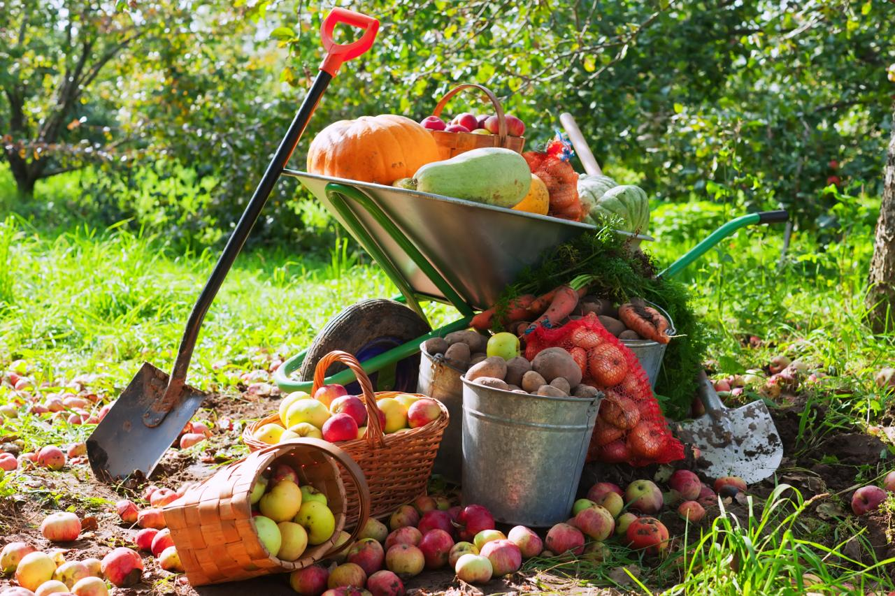

rohmanfatkhul946@gmail.com

Pemetaan Potensi Tanaman Buah
Sistem Informasi Geografis untuk memetakan sebaran Alpukat, Mangga, dan Rambutan di Kabupaten Pemalang.

Analisis Agroklimat & Topografi
Menganalisis hubungan antara ketinggian lahan (mdpl) dengan jenis tanaman buah yang dominan.
Mendukung Pertanian Daerah
Memberikan gambaran visual yang akurat untuk pengambilan keputusan perencanaan pertanian.